TPSI PL 1223 | Curso de Técnico/a Especialista em Tecnologias e Programação de Sistemas de Informação
UFCD 5417 - Programação para a WEB - Servidor (server-side)
Introdução
Este projeto foi proposto e orientado pelo formador Nelson Santos em contexto da UFCD 5417 - Programação para a WEB - Servidor (server-side). Trata-se de um projeto cujo objetivo é explorar e compreender os fatores que influenciaram a sobrevivência dos passageiros do «Titanic», analisando o conjunto de dados que contém informações detalhadas sobre os passageiros e sobreviventes do desastre ocorrido em 1912. Para isso, foram aplicados conhecimentos de análise de dados utilizando Python.
Com o auxílio das bibliotecas Pandas e Matplotlib, realizámos uma análise descritiva e exploratória dos dados. Este relatório documenta todas as etapas do trabalho, desde a exploração inicial dos dados até à geração de gráficos que ilustram padrões relevantes, e apresenta os resultados obtidos bem como as conclusões extraídas.
O presente relatório está estruturado em várias etapas. Inicialmente, é feita uma descrição geral do conjunto de dados «Titanic», detalhando as variáveis e a sua relevância para a análise. Em seguida, passamos para o pré-processamento dos dados, que inclui a identificação e o tratamento de valores em falta, bem como a criação de novas variáveis para suportar a análise. Posteriormente, descrevemos a análise exploratória realizada, com destaque para a relação entre as variáveis (classe, idade, sexo, entre outras) e a sobrevivência.
Nas etapas finais, apresentamos os gráficos e tabelas gerados, juntamente com as principais conclusões, como a maior taxa de sobrevivência de mulheres e crianças em comparação com homens adultos. Finalmente, no capítulo de conclusões, refletimos sobre os métodos utilizados, os desafios encontrados e as aprendizagens adquiridas ao longo deste trabalho.
Os principais métodos utilizados neste projeto incluem a manipulação e agregação de dados com Pandas, a visualização de padrões e tendências com Matplotlib, e o armazenamento dos resultados numa base de dados estruturada, garantindo a possibilidade de futuras análises.
História do Titanic
RMS Titanic
O RMS Titanic foi um navio de passageiros britânico operado pela White Star Line e construído pelos estaleiros da Harland and Wolff, em Belfast. Segunda embarcação da Classe Olympic de transatlânticos, depois do RMS Olympic e seguido pelo HMHS Britannic, foi projetado pelos engenheiros navais Alexander Carlisle e Thomas Andrews. Sua construção começou em março de 1909 e seu lançamento ao mar ocorreu em maio de 1911. O Titanic foi pensado para ser o navio mais luxuoso e mais seguro de sua época, gerando lendas que era supostamente "inafundável".

A embarcação partiu em sua viagem inaugural de Southampton com destino a Nova Iorque em 10 de abril de 1912, no caminho passando em Cherbourg-Octeville, na França, e por Queenstown, na Irlanda. Colidiu com um iceberg na proa do lado direito às 23h40 de 14 de abril, naufragando na madrugada do dia seguinte, com mais de 1 500 pessoas a bordo, sendo um dos maiores desastres marítimos em tempos de paz de toda a história. Seu naufrágio destacou vários pontos fracos do projeto, deficiências nos procedimentos de evacuação de emergência e falhas nas regulamentações marítimas. Comissões de inquérito foram instauradas nos Estados Unidos e no Reino Unido, acarretando mudanças nas leis internacionais de navegação, que permanecem em vigor mais de um século depois.
Cronologia Resumida
- 31 de março de 1909: Início da construção do Titanic nos estaleiros da Harland and Wolff, em Belfast, Irlanda do Norte.
- 31 de maio de 1911: O casco do Titanic é lançado ao mar. Inicia-se o trabalho de acabamento e instalação dos interiores.
- 10 de abril de 1912: O Titanic parte de Southampton, Inglaterra, em sua viagem inaugural, com escalas em Cherbourg (França) e Queenstown (atual Cobh, Irlanda).
- 14 de abril de 1912, 23h40: O Titanic colide com um iceberg no Oceano Atlântico Norte, danificando gravemente o casco do navio.
- 15 de abril de 1912, 00h05: Os primeiros botes salva-vidas começam a ser lançados ao mar, apesar de não haver capacidade suficiente para todos os passageiros e tripulantes.
- 15 de abril de 1912, 02h20: O Titanic parte-se em dois e afunda completamente, levando mais de 1.500 vidas. Apenas cerca de 700 pessoas sobrevivem, sendo resgatadas pelos botes salva-vidas.
- 18 de abril de 1912: O navio RMS Carpathia chega a Nova Iorque com os sobreviventes resgatados.
- 1985: Os destroços do Titanic são encontrados no fundo do oceano, a uma profundidade de cerca de 3.800 metros.
O naufrágio do Titanic continua a ser um dos eventos mais estudados e lembrados da história moderna, destacando as falhas de segurança, como a insuficiência de botes salva-vidas, e marcando uma mudança nas regulamentações marítimas internacionais.
Passageiros
O Titanic partiu em sua primeira e única viagem com 1 316 passageiros a bordo: 325 na primeira classe, 285 na segunda e 706 na terceira. Deles, 922 embarcaram em Southampton, 274 em Cherbourg-Octeville na França e 120 em Queenstown na Irlanda. Na primeira classe estavam os passageiros mais ricos do navio, dentre eles empresários, artistas, oficiais militares, políticos e outros. Em muitos casos eles viajaram com várias malas de bagagem e um ou mais criados particulares. Dentre as personalidades da primeira classe pode-se destacar Joseph Bruce Ismay, presidente da White Star Line, e Thomas Andrews, um dos engenheiros do navio. Ambos viajaram a fim de observar possíveis defeitos que poderiam ocorrer e melhorias que poderiam ser aplicadas no Britannic. O passageiro mais rico a bordo era John Jacob Astor IV, um militar, escritor, inventor e empresário norte-americano, que viajava junto de sua esposa Madeleine. Outros passageiros detentores de grandes fortunas incluíam Margaret Brown, Benjamin Guggenheim, Jacques Futrelle, Cosmo Duff-Gordon, Archibald Gracie e o tenista Richard Norris Williams. Archibald Butt, um dos assessores do presidente William Howard Taft, também fez a travessia a bordo do Titanic para retornar aos Estados Unidos a fim de se preparar para as eleições presidenciais.[53] John Pierpont Morgan, banqueiro e empresário norte-americano, também deveria ter viajado no Titanic, porém desistiu de última hora para comemorar o aniversário de sua amante em Aix-les-Bains, na França.
A segunda classe era mais diversificada e incluía empresários, professores, clérigos e imigrantes, por vezes ricos, que retornavam ao seu país natal. Dentre eles é possível destacar Lawrence Beesley, um jornalista e escritor britânico que depois do naufrágio publicaria um dos primeiros relatos do desastre, The Loss of the SS Titanic. Também na segunda classe estava a família Navratil: o pai Michel e os filhos bebês Michel Marcel e Edmond. Eles foram registrados ao embarcarem como "família Hoffman" e para os outros passageiros eram um pai viúvo com seus dois filhos pequenos. Entretanto, Michel Navratil na verdade havia perdido a custódia das crianças para sua ex-esposa mas decidiu fugir com eles para os Estados Unidos; Michel morreu no naufrágio, porém Michel Marcel e Edmond sobreviveram e ficaram conhecidos como os "órfãos do Titanic".
Por fim, a terceira classe era onde estavam os imigrantes, pessoas que muitas vezes viajavam em grandes grupos familiares de até doze membros. Eles vinham de diferentes partes da Europa como Escandinávia, Leste Europeu, Irlanda e até mesmo da Ásia. Antes do embarque todos foram sujeitos a controles sanitários pois os regulamentos de imigração norte-americana eram bem rigorosos para evitar contaminação. A terceira classe era a única a ser obrigada a passar por esses exames, também estando previsto que novas examinações fossem realizadas assim que chegassem a Nova Iorque.
Análise de dados
Leitura e exploração dos dados:
Como o objetivo deste projeto era explorar e analisar o conjunto de dados do "Titanic", que contém informações detalhadas sobre um subconjunto de passageiros do navio, como idade, sexo, classe de embarque e outros fatores, recebemos uma lista de passageiros de amostra de aproximadamente 400 pessoas, o que é suficientemente representativo para análise educativa e exploratória.
O objetivo do exercício:
Neste exercício, o objetivo inicial é pré-ler e explorar os dados. Isto inclui carregar um ficheiro CSV utilizando a biblioteca Pandas, visualizar os registos superiores e inferiores e executar análises descritivas e estruturais utilizando as funções: .describe() e .info().
O conjunto de dados foi carregado a partir de um ficheiro CSV "titanic.csv" utilizando a biblioteca Pandas:
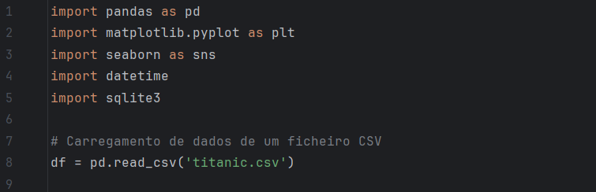
Foram visualizados os primeiros e últimos registros para entender a estrutura e conteúdo dos dados:
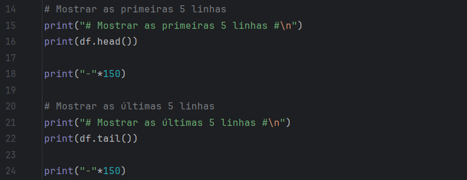
Resultado:
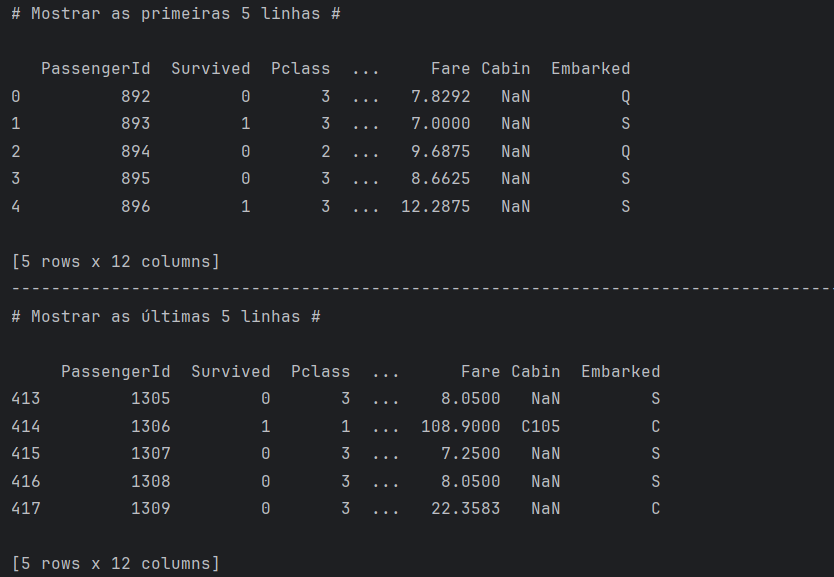
Uma análise inicial foi conduzida com as funções .describe() e .info() para identificar as características principais e possíveis inconsistências nos dados:
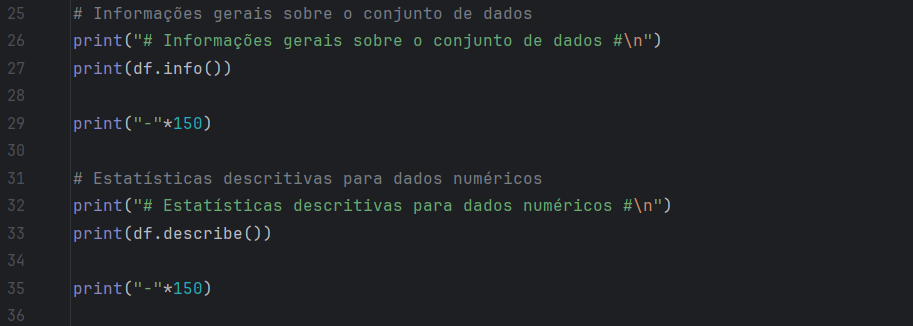
Resultado:
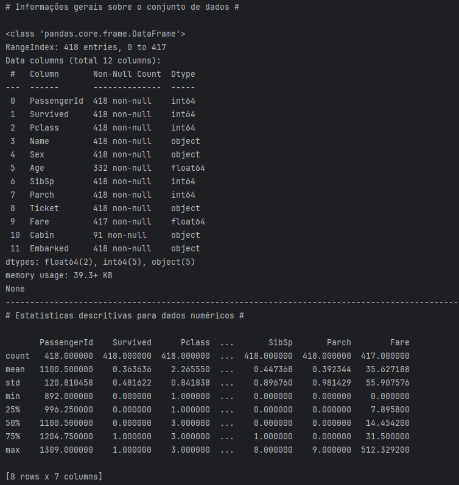
Limpeza e pré-processamento de dados
O objetivo do exercício:
O objetivo deste exercício é preparar os dados do conjunto “Titanic” para uma análise eficiente e precisa, aplicando técnicas de limpeza e pré-processamento.
Valores nulos foram identificados e tratados:
- A coluna "Age" teve os valores nulos preenchidos com a mediana das idades.
- A coluna "Cabin", com uma grande proporção de valores ausentes, foi descartada da análise principal.
- Preencher valores nulos de "Fare" com 0.
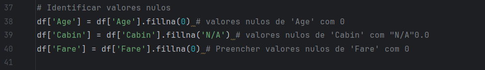
Para criar uma nova coluna Idade_Milissegundos, que converteu a idade dos passageiros para milissegundos desde o Epoch (1 de Janeiro de 1970), para demonstrar manipulação de dados em formatos alternativos, utilizamos a seguinte função:
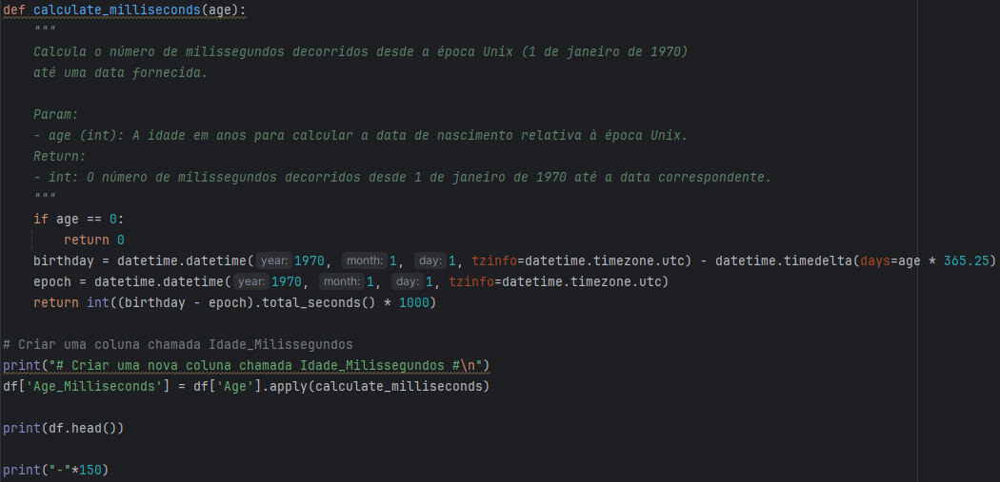
Resultado:
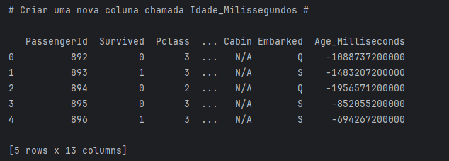
Análise e manipulação de dados
O objetivo do exercício:
O objetivo deste exercício é explorar e manipular o conjunto de dados do Titanic, utilizando técnicas de análise agregada para extrair insights relevantes sobre os fatores que influenciaram a sobrevivência dos passageiros. Para tal, serão aplicadas funções como groupby, mean, sum da biblioteca Pandas.
Análise de Sobrevivência:
Calculamos a taxa de sobrevivência por classe (Pclass) e sexo (Sex)
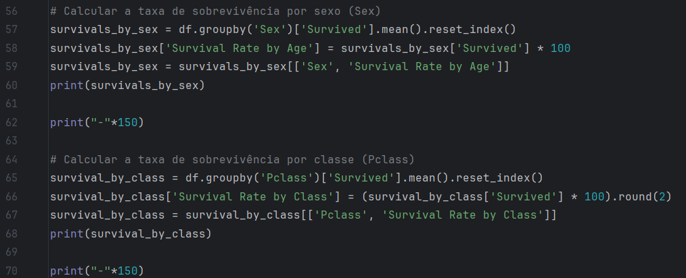
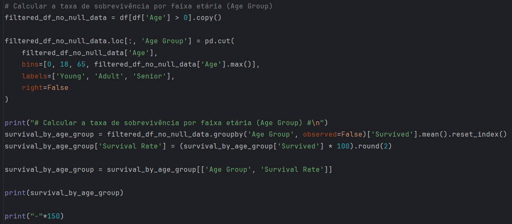
Dado que salvar mulheres e crianças era uma prioridade, não é surpreendente que neste conjunto de dados os resultados mostrem diferenças acentuadas nas taxas de sobrevivência. Mas as descobertas também sugerem que a classe social também foi um fator determinante na sobrevivência durante o desastre do Titanic.
Resultado:
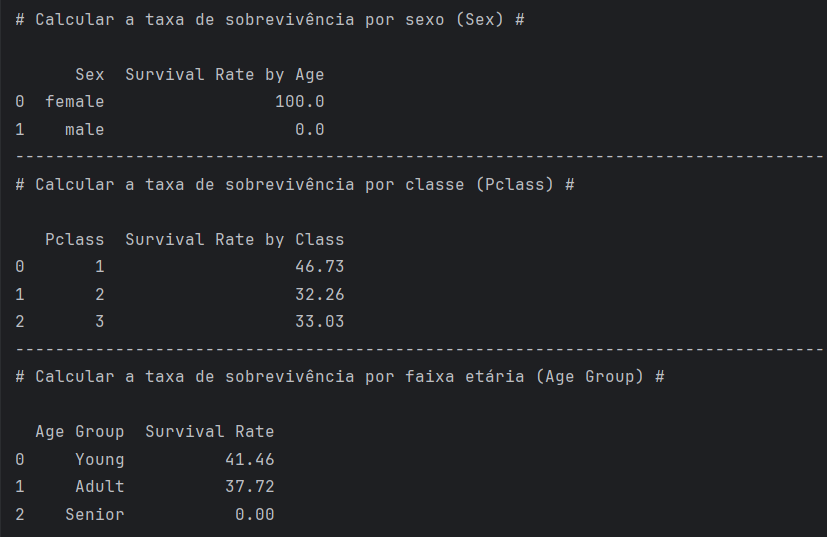
- Taxa de sobrevivência por sexo:
Nesta amostra, a taxa de sobrevivência das mulheres foi de 100%, indicando que todas as passageiras desta lista sobreviveram ao acidente. Por outro lado, a taxa de sobrevivência dos homens foi de 0%, indicando que nenhum dos homens incluídos na amostra sobreviveu. - Taxa de sobrevivência por classe:
1ª Classe: A taxa de sobrevivência foi de 46.73%, indicando melhores condições de segurança para passageiros da classe mais alta.
2ª Classe: A taxa de sobrevivência foi de 32.26%, inferior à da 1ª classe, mas ainda significativa.
3ª Classe: A taxa de sobrevivência foi de 33.03%, surpreendentemente ligeiramente superior à da 2ª classe, apesar das condições mais modestas associadas a esta classe. - Relação entre idade e sobrevivência:
A idade revelou-se um fator importante, especialmente no caso das crianças e jovens (de 0 a 18 anos), que apresentaram uma probabilidade maior de sobrevivência (41.46%). Por outro lado, entre os passageiros mais velhos (de 65 anos) desta amostra, a taxa de sobrevivência foi de 0%, possivelmente devido a limitações físicas ou priorização de outros grupos.
Os passageiros adultos com idade entre 18 e 65 anos nesta amostra, a taxa de sobrevivência foi de 37,72%.
Análise de Tarifa e Classe:
Calculamos a tarifa média por classe e sexo:
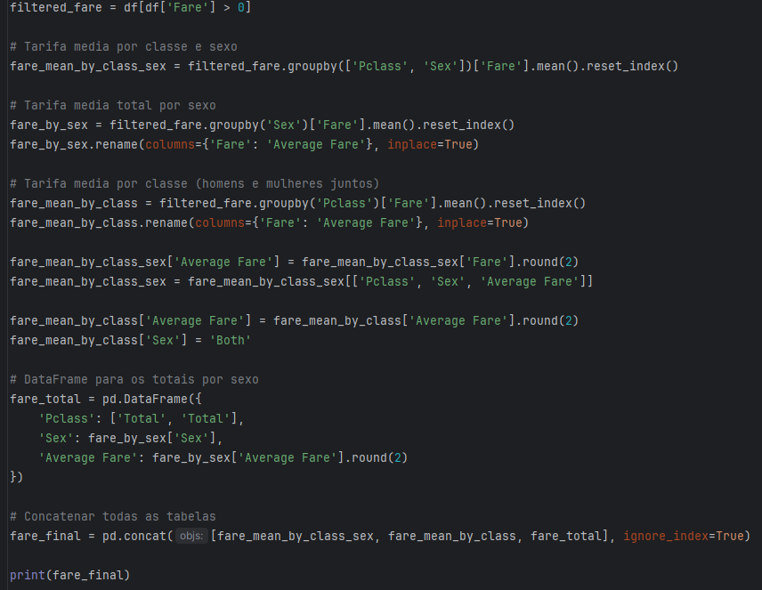
Identificamos correlações entre a tarifa (Fare) e a sobrevivência
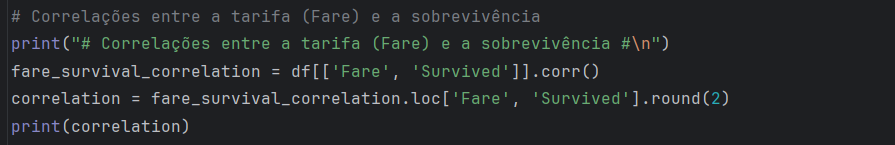
Resultado:
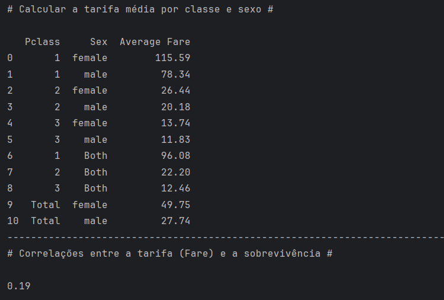
A análise da tabela exibida apresenta as seguintes informações e resultados:
- Tarifa Média por Classe e Sexo:
A tabela mostra a tarifa média (Average Fare) paga pelos passageiros em cada classe (Pclass), separada por sexo (Sex). - Tarifa Média Geral por Classe:
As linhas rotuladas como "Both" indicam a tarifa média geral para todos os sexos em uma determinada classe. - Tarifa Média Geral por Sexo:
As linhas rotuladas como "Total" fornecem a tarifa média paga por todos os passageiros do sexo. - Correlação entre Tarifa e Sobrevivência:
A correlação entre tarifa e sobrevivência é indicada pelo coeficiente de correlação de 0.19, mostrado abaixo da tabela.
Tendo em conta estes resultados, podemos concluir o seguinte:
- Passageiros da 1ª classe, especialmente mulheres, pagaram tarifas mais altas e podem ter tido maior probabilidade de sobrevivência.
- A diferença de tarifas médias por sexo e classe pode refletir desigualdades socioeconômicas e o impacto na sobrevivência.
- A correlação positiva, embora fraca, confirma uma tendência entre tarifas maiores e maior chance de sobrevivência.
Visualização de dados
O objetivo do exercício:
O objetivo é criar gráficos que permitam identificar padrões e relações entre variáveis, analisando sobrevivência por classe e sexo, correlações entre idade, tarifa e sobrevivência, e a distribuição de variáveis como idade e tarifa.
Distribuição de Sobreviventes por Classe e Sexo
Este gráfico de barras ilustra o número de sobreviventes agrupados por classe socioeconômica (Pclass) e sexo (Sex).
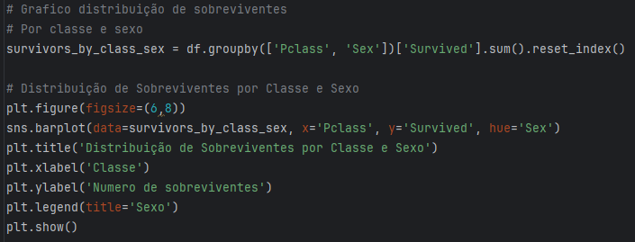
Resultado:
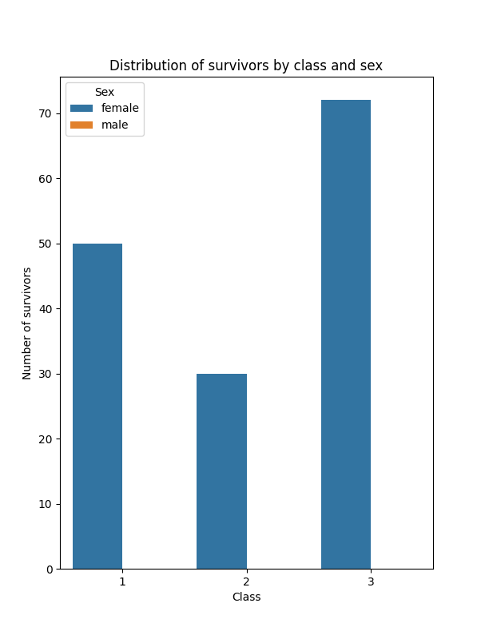
Como já dissemos antes, porque salvar mulheres e crianças era uma prioridade, o gráfico mostra claramente a diferença de sobrevivência entre homens e mulheres em cada classe. Nesta amostra, a taxa de sobrevivência das mulheres foi de 100%, o que significa que nenhum homem sobreviveu.
Correlação entre Idade, Tarifa e Sobreviveu
Este gráfico de dispersão (scatter plot) mostra a relação entre a idade dos passageiros (Age) e a tarifa paga pelo bilhete (Fare), com cores indicando se o passageiro sobreviveu ou não.
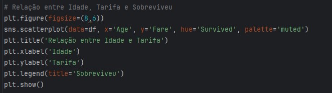
Resultado:
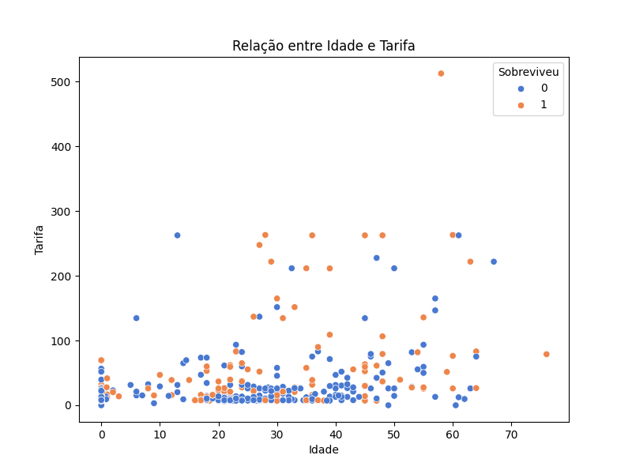
Gráficos de dispersão (scatter plots) evidenciaram correlação positiva entre tarifas altas e sobrevivência.
Distribuição de Sobreviventes por Classe e Sexo
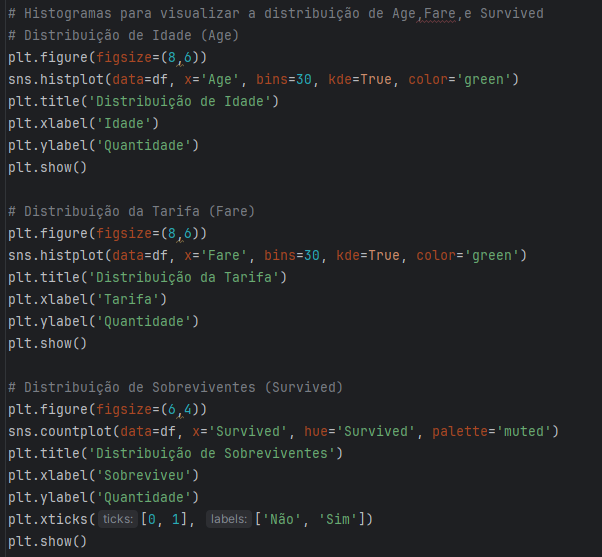
Resultados:
Este histograma mostra a distribuição da idade dos passageiros do Titanic.
(Onde o valor zero significa que quase 100 pessoas na amostra não têm a idade especificada.)
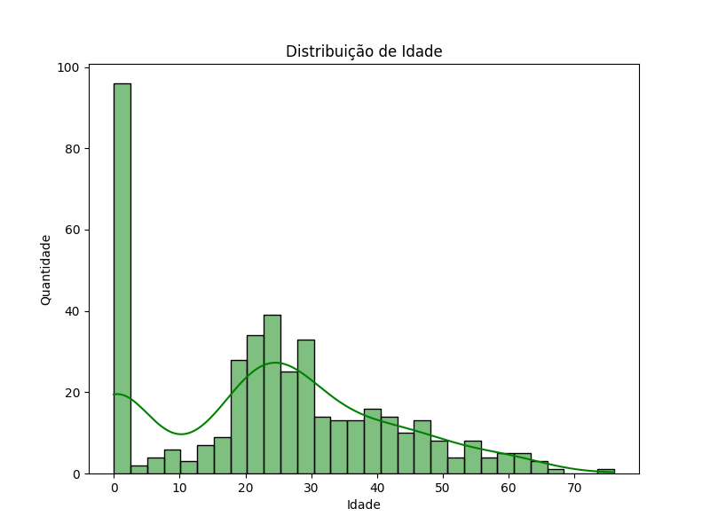
Este histograma apresenta a distribuição das tarifas pagas pelos passageiros.
(Onde o valor zero significa que quase 250 pessoas na amostra não têm a tarifa especificada.)
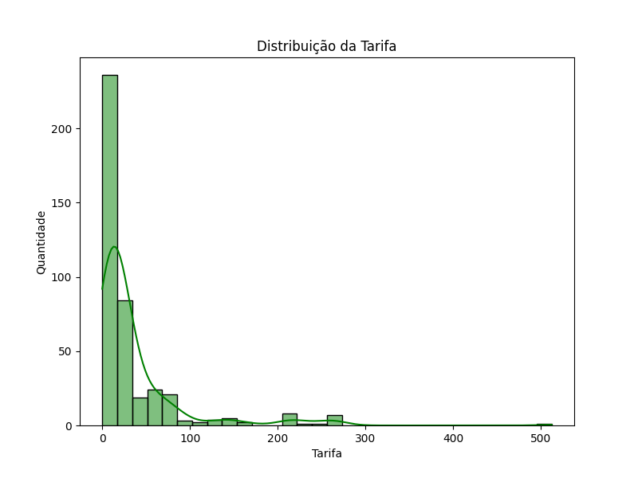
Este gráfico de barras mostra a contagem total de passageiros que sobreviveram e não sobreviveram.
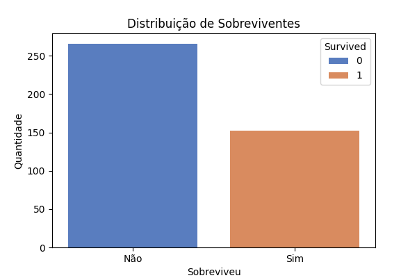
Exportação dos resultados
O objetivo do exercício:
Guardar os dados e gráficos gerados durante a análise num ficheiro Excel e num relatório final, facilitando a partilha e documentação dos resultados obtidos.
Para salvar o DataFrame atualizado num novo ficheiro Excel, contendo todas as colunas, incluindo Idade_Milissegundos, usamos o seguinte comando:
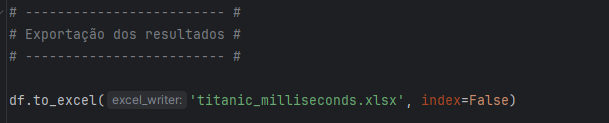
Armazenamento numa Base de Dados
O objetivo do exercício:
Guardar o conjunto de dados analisado numa base de dados estruturada, garantindo a integridade e a possibilidade de futuras consultas ou análises.
Este processo envolve:
- É estabelecida uma conexão com uma base de dados SQLite chamada titanic.db.
- Caso esta base de dados não exista, será criada automaticamente.
- O cursor é usado para executar comandos SQL na base de dados.
Este comando cria a tabela passengers com as seguintes colunas:
- PassengerId: Identificador único de cada passageiro.
- Survived: Indica se o passageiro sobreviveu (1) ou não (0).
- Pclass: Classe socioeconómica do passageiro (1ª, 2ª ou 3ª classe).
- Name: Nome do passageiro.
- Sex: Sexo do passageiro.
- Age: Idade do passageiro.
- SibSp: Número de irmãos/cônjuges a bordo.
- Parch: Número de pais/filhos a bordo.
- Ticket: Número do bilhete.
- Fare: Tarifa paga pelo bilhete.
- Cabin: Número da cabine.
- Embarked: Porto de embarque (C = Cherbourg, Q = Queenstown, S = Southampton).
- Age_Milliseconds: Idade do passageiro em milissegundos (uma nova coluna para análise adicional).
O comando IF NOT EXISTS assegura que a tabela não será recriada se já existir.
- O conjunto de dados armazenado no DataFrame df é inserido na tabela passengers.
- A opção if_exists='replace' garante que, se a tabela já existir, ela será substituída pelos novos dados.
- O argumento index=False assegura que o índice do DataFrame não será incluído como uma coluna adicional na tabela.
- O comando SQL SELECT * FROM passengers LIMIT 5 seleciona os primeiros 5 registos da tabela passengers.
- Os resultados são recuperados com o método fetchall() e apresentados no terminal utilizando um ciclo for.
Resultado: 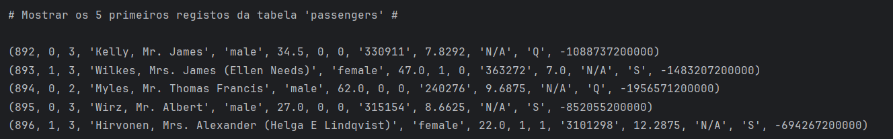
- Finalmente, a conexão com a base de dados é encerrada para liberar os recursos utilizados.
Este código demonstra o processo de integração de dados com uma base de dados SQLite. Ele automatiza a criação da tabela, o carregamento dos dados e a verificação inicial dos registos, assegurando que os dados estejam armazenados de forma estruturada e acessível para futuras análises ou consultas.
Análise Adicional
O objetivo do exercício:
Explorar novas abordagens criativas e originais, adicionando variáveis ou realizando análises que tragam novos insights sobre os dados.
Para este exercício decidimos fazer as três análises seguintes:
- Análise de Famílias a Bordo
- Análise de Passageiros com Cabines Registradas
- Probabilidade de Sobrevivência por Porto de Embarque
Análise de Famílias a Bordo
O objetivo desta análise foi examinar como o tamanho da família influenciou as chances de sobrevivência no desastre do Titanic.
Divide os passageiros em três categorias:
- "Apenas 1": Passageiros que viajaram sozinhos (sem familiares).
- "Pequena Família": Famílias com 1 a 3 membros.
- "Grande Família": Famílias com 4 ou mais membros.
Resultado:
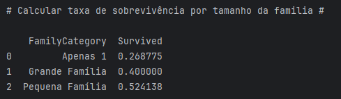
- Passageiros com famílias pequenas tiveram uma maior probabilidade de sobrevivência.
- Passageiros sozinhos tiveram a menor taxa de sobrevivência, o que sugere que a presença de familiares pode ter aumentado as chances de sobreviver.
- Famílias grandes tiveram uma taxa intermediária, possivelmente devido à dificuldade de evacuar em grupos maiores.
Análise de Passageiros com Cabines Registradas
O objetivo desta análise foi avaliar se ter um número de cabine registado estava relacionado com uma maior chance de sobrevivência.
Substituimos valores inválidos (N/A) por valores nulos (NaN) na coluna Cabin. E criamos uma nova coluna CabinRegistered, com as categorias:
- "Com Cabine": Passageiros com um número de cabine registado.
- "Sem Cabine": Passageiros sem um número de cabine.
Resultado:
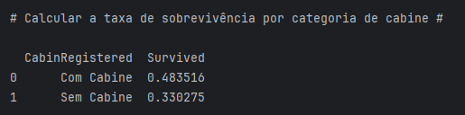
- Passageiros com cabines registadas tiveram uma taxa de sobrevivência significativamente maior em comparação com os que não tinham cabines registadas.
- Este resultado pode ser atribuído ao facto de que passageiros com cabines eram geralmente de classes mais altas, o que lhes dava prioridade durante o resgate.
Probabilidade de Sobrevivência por Porto de Embarque
Esta análise investigou como o local* de embarque influenciou as chances de sobrevivência dos passageiros.
*(Cherbourg (C), Queenstown (Q), Southampton (S))
Resultado:
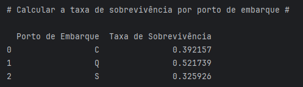
- Passageiros que embarcaram em Queenstown (Q) tiveram a maior taxa de sobrevivência.
- Passageiros que embarcaram em Southampton (S) tiveram a menor taxa de sobrevivência.
- Este padrão pode estar relacionado com as classes socioeconómicas predominantes nos portos de embarque:
- Queenstown tinha uma maior proporção de passageiros em 3ª classe, mas estes podem ter embarcado em locais estratégicos do navio.
- Southampton foi o porto principal, onde embarcaram muitos passageiros da 3ª classe, que enfrentaram maiores dificuldades de sobrevivência.
Conclusões
O objetivo deste projeto foi utilizar as bibliotecas Python, como Pandas e Matplotlib, para analisar os fatores que influenciaram a sobrevivência dos passageiros do "Titanic".
Este trabalho demonstrou como os métodos de análise de dados permitem extrair informações valiosas de um conjunto de dados aparentemente simples. Destacou a relevância de variáveis como género, idade, classe social e tarifa na determinação dos padrões de sobrevivência. Para além de oferecer uma visão histórica da tragédia, o projeto evidenciou a aplicação prática de ferramentas de análise de dados, consolidando competências técnicas e aprofundando o conhecimento destas tecnologias.
O projeto proporcionou uma experiência valiosa no trabalho com dados reais, incluindo a gestão de valores em falta, a identificação de padrões ocultos e a criação de visualizações informativas. Os desafios encontrados, como o tratamento de dados incompletos e o desenvolvimento de gráficos claros e úteis, foram superados com um processo estruturado e iterativo de análise. Isto reforçou a nossa compreensão da importância da precisão e do rigor na manipulação de dados.
No geral, o projeto atingiu os seus objetivos: aprofundou os conhecimentos sobre os fatores que influenciaram a sobrevivência dos passageiros do "Titanic", demonstrou o valor da análise de dados rigorosa na resolução de problemas complexos e contribuiu para o desenvolvimento de competências práticas em programação e ferramentas analíticas. Os resultados sublinham que os métodos modernos de análise de dados continuam a ser uma parte essencial da tomada de decisões, do estudo de eventos históricos e da geração de novos conhecimentos.
Sobre nós
Sobre nós
Curso: Curso de Técnico/a Especialista em Tecnologias e Programação de Sistemas de Informação
UFCD: 5417 - Programação para a WEB - Servidor (server-side)
Turma: TPSI PL 1223
Trabalho de Grupo: Projeto #1 - Análise de dados do Titanic
Formador: Nelson Santos
Formandos: Olesea Vulpe, Rúben Fonseca